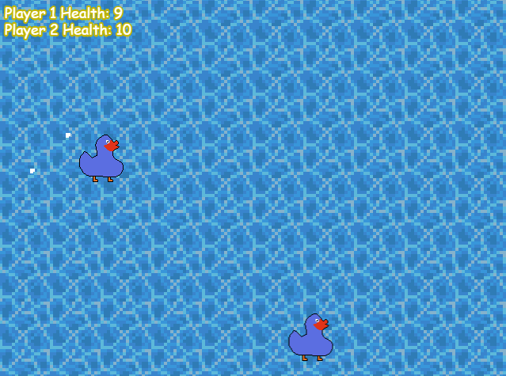
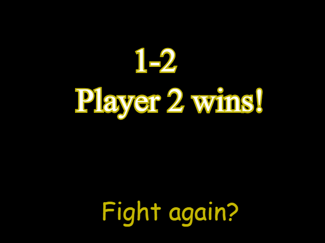

Project 4 Proposal
1. Game Concept
This game, Duck and the Land of Flightless Birds Web Version, is a port of a 2D Platformer I've been working on for a while, I hope to recreate the first few levels in the game.
2. Genre
This game is an action-adventure platformer with metriodvania elements. Focus on action and swapping weapons.
3. Platform
This will be availible for both desktop and mobile platforms, with a version of the game's controls for mobile appearing on those devices.
4. Story
The "story" is that a hunter has stolen these eggs from your village, so you have to go out and get them back.
5. Visuals and Sound
The visuals are all pixel based. The music is more of a classical based sound, mostly some nice jams for the game, get the player excited and ethusiastic about playing.
6. Gameplay
There's a few movement quirks, along with your standard jump/ move you also have a flutter ability by default and a few more moves as the game progresses. Usually you'd only have one weapon, but for the sake of keeping the levels limited, the player has three weapons unlocked by default.
7. Screenshots


8. Developer
My name's Kent, I'm a second year GDD major with a background in Web Development and Software Engineering. I started programming when I was 12 when I learned binary, I soon picked up C++ and haven't stopped making neat programs since.